AI automation and booking websites that give small businesses their time back.
I build AI workflows that read, decide and reply, with you approving anything unsure. I also build fast websites with online booking, ordering and quotes, and fix slow or broken sites without a rebuild.
10+ yearsbuilding web products, from startup founder to senior engineer
MSc, Computer Sciencewith 4 peer-reviewed papers on optimization algorithms
AWS CertifiedSolutions Architect
Plan, test, shipwritten plan, small steps you can test, fixed price
All case studies and demos: pooya.website/work | Contact: pooya.website/contact
AI automation: lead-to-CRM pipeline
Every new lead scored, saved to your CRM and answered.
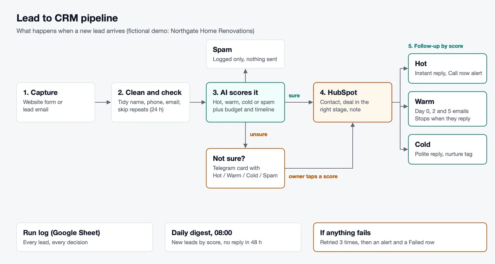
The workflow: capture, clean, score, save, follow up. Sample build, tested for a home renovation company.
Leads captured from your form or emailNames and phone numbers tidied. A repeat within 24 hours is skipped.
AI marks each lead hot, warm, cold or spamIt notes the service, budget, timeline and language. Spam is only logged.
Saved to your CRM for youContact, deal in the right stage, and a note on what the AI saw.
Follow-ups by scoreHot: instant reply and a Call now alert. Warm: email now, then day 2 and day 5, stopping when they reply.
Lead-to-CRM pipeline: how it stays safe, and the results
When it is unsure, it asks you. When a step fails, you hear about it.
12 of 12messy test leads passed (20 of 20 checks, 0 failed n8n runs)
11 of 11leads scored as expected, and 47 of 47 unit tests pass
about US$0.00035AI cost per lead, measured in testing
about 13 hourssaved a month for 100 leads at 8 minutes each (my estimate)
You stay in chargeIf the AI is less sure than the level you set, nothing is sent. You get its guess, its reason and four buttons: Hot, Warm, Cold, Spam.No answer in 24 hours: the lead is saved as Needs review and nothing goes out.
Nothing fails quietlySteps retry three times, then you are alerted by email and phone and a Failed row is logged. Repeat leads never double up in the CRM.Every lead, score, decision and AI cost is in one sheet, plus a daily 08:00 summary.
What the test coveredTypos, no phone number, French, spam, a duplicate, a vague lead and an email lead. The French lead was answered in French and spam never reached the CRM.
Run locally with test mail. The owner review step ran through the review link, not real Telegram taps, so live Telegram taps and Gmail intake are not claimed. Running costs are estimates: n8n self-hosted from about US$5 a month, with the free HubSpot CRM.
An AI agent that prepares the work. You approve it.
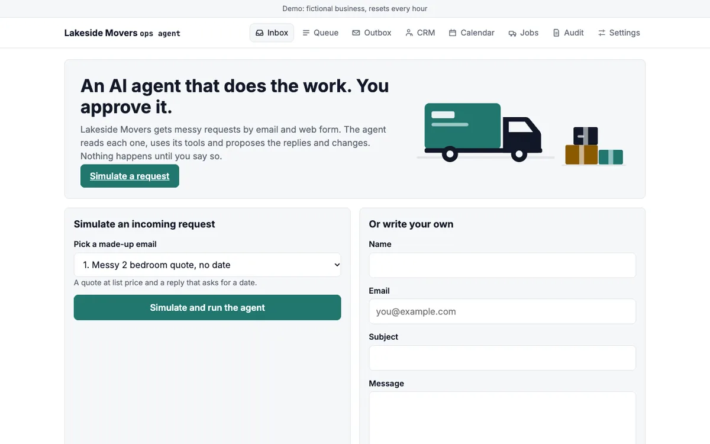
Demo: the back office of Lakeside Movers, a moving company. Pick an email or write your own.
Reads each requestA quote, a booking change, a complaint or a question, and how sure it is.
Uses the business's own toolsPrice list, calendar, the CRM (customer list) and the job sheet.
Proposes, never acts aloneA drafted reply and each change as a before and after, such as moving a job from Thu 8:00 to Thu 14:00.
You decide in one tapApprove, edit the reply, or reject. Only then is anything sent or changed.
AI operations agent: what the owner sees, and the safety rules
Every step shown, every request costed, safety rules in code.
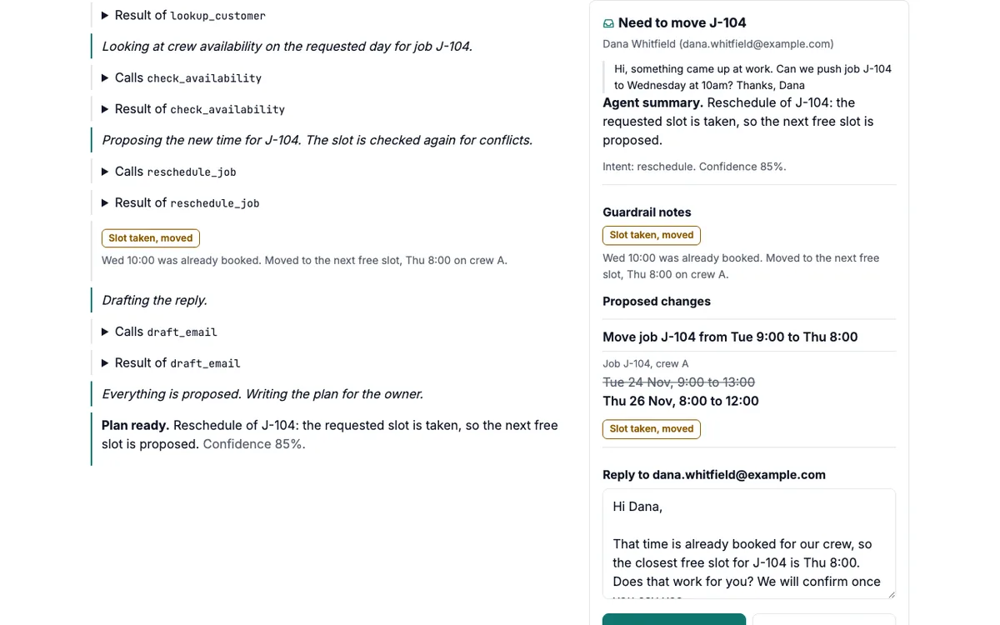
The agent's steps and its proposals, waiting for the owner.
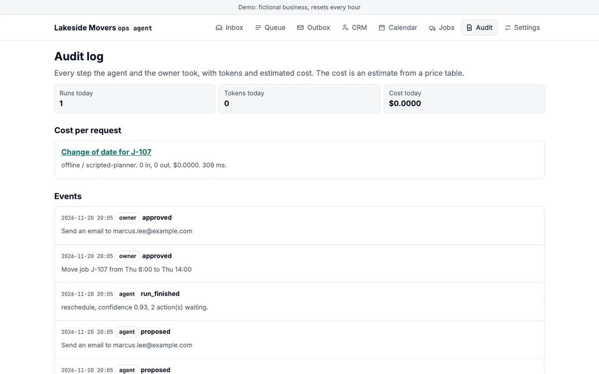
The audit log, with estimated AI cost for every request.
Price limitsQuotes stay within the price list.
No double bookingA taken slot is never booked twice.
Unsure goes to youThe agent hands it over.
Big refundsAbove a set amount the owner must approve.
Trick emailsEmails giving it new instructions are flagged.
The rules are written in code, not in the AI's instructions, and tests cover the guardrails and the tools. The AI provider is switchable: Workers AI on the public demo and Claude when run locally.
Next.jsTypeScriptCloudflare WorkersD1Workers AIClaude API
AI automation: booking assistant (n8n sample)
Every booking read, answered, calendared and logged for you.
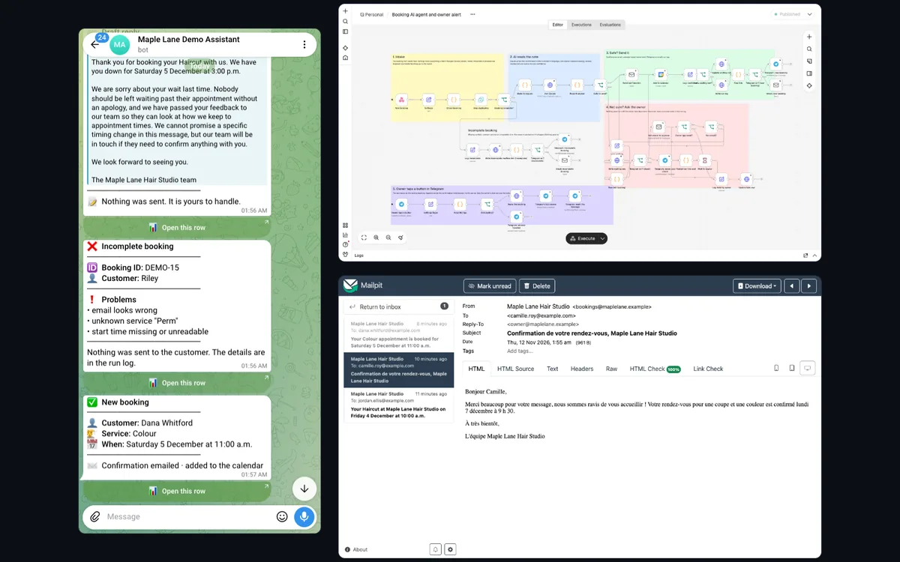
The n8n workflow and the owner's Telegram message. Tested for a hair salon.
Reads the booking and tidies it upMissing or unreadable parts are flagged. It never guesses.
Writes a friendly reply in the customer's languageA note in French gets a reply in French.
Emails the confirmation and adds it to the calendarThen the owner gets a phone message with a link to the log row.
Allergy, upset tone or special request? It asks you firstApprove sends the email and updates the calendar. Hold sends nothing.
Booking assistant: the log, the safety, the results
Tested on twelve messy bookings. Each one ended where it should.
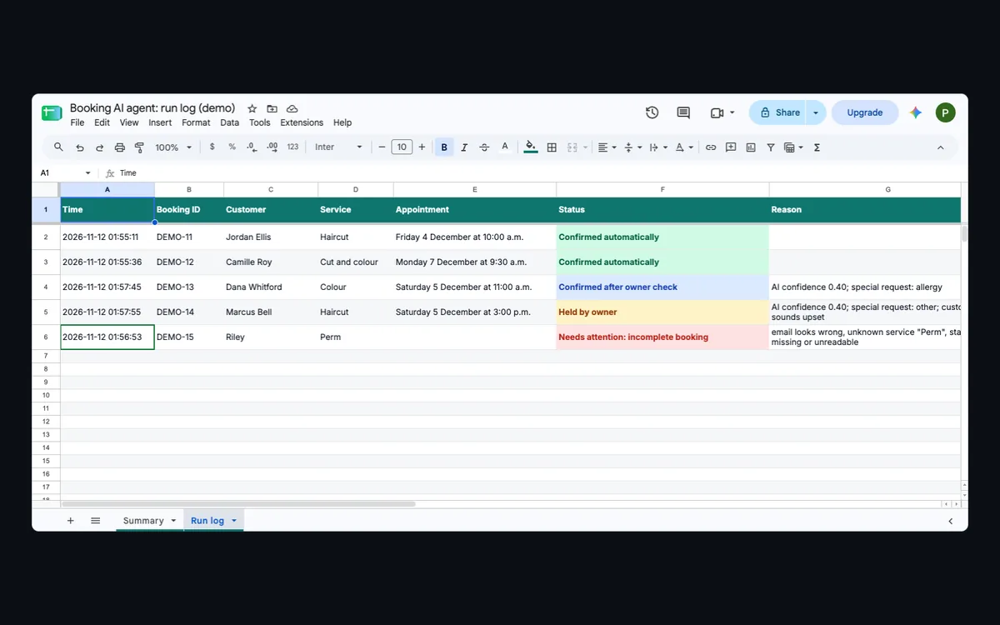
Every booking, its status, the reason and the AI cost, in one sheet.
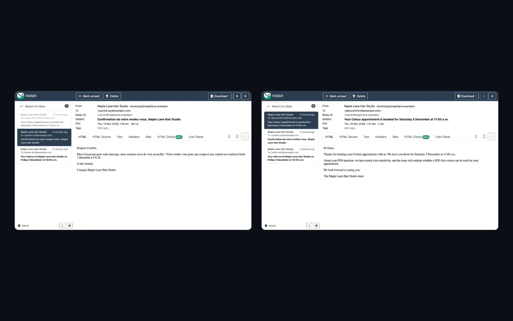
Confirmation emails the assistant sent.
about 5 minutessaved per booking (estimate)
12 to 30 hoursa month: 150 bookings, or about 30 hours at 12 a day (estimates)
about US$0.0002AI cost per booking, measured in testing
The test set: a clean booking, an empty note, French and Spanish notes, an allergy, an upset customer, a past date, phone-only, the same booking twice and an incomplete form. Duplicates are handled once, failed steps retry then alert the owner, and nothing unsure is sent automatically.
Answers your customers in your voice, on the chat they already use.
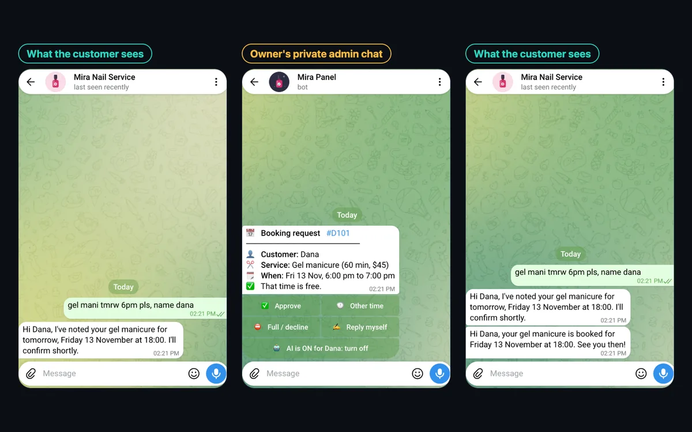
Demo: a one-person nail studio. The customer side runs on a demo Telegram bot standing in for the business account.
Replies as the owner, in the customer's languageOnly from your sheet: hours, prices, services and a FAQ. Messy typing is fine.
Not sure? The owner gets a draft to sendThe customer gets a short holding reply. Tap Send, or type a few rough words and the AI writes it properly.
Takes bookings from real free timesIt checks hours, breaks, days off and every pending booking, then asks the owner to approve.
One tap adds it to Google CalendarApprove confirms to the customer and saves it in the sheet.
Customer assistant: the owner's side and the results
A private admin chat and one Google Sheet run the back office.
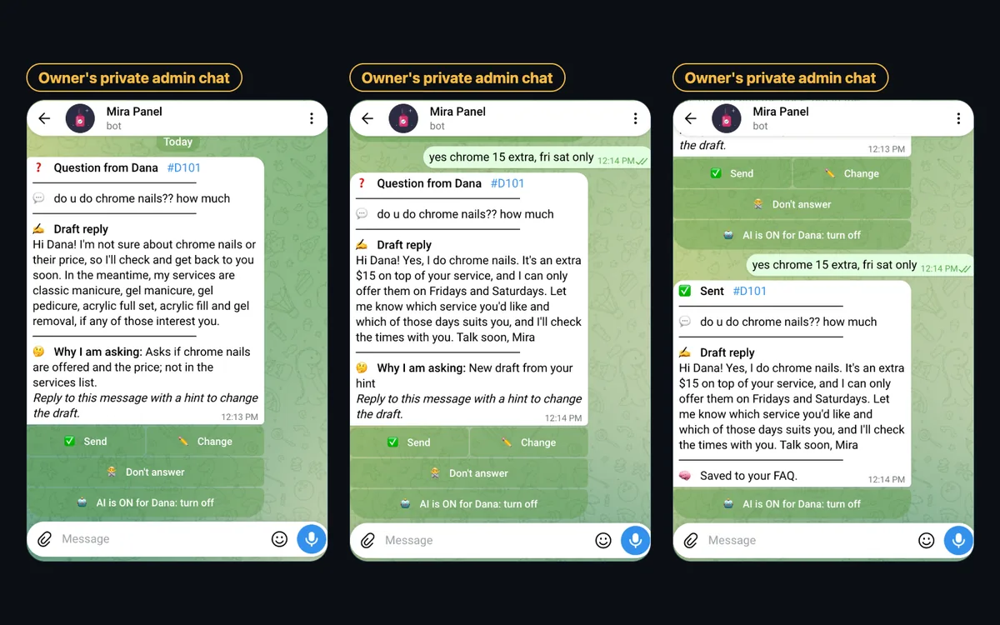
The owner's private admin chat: draft cards and buttons.
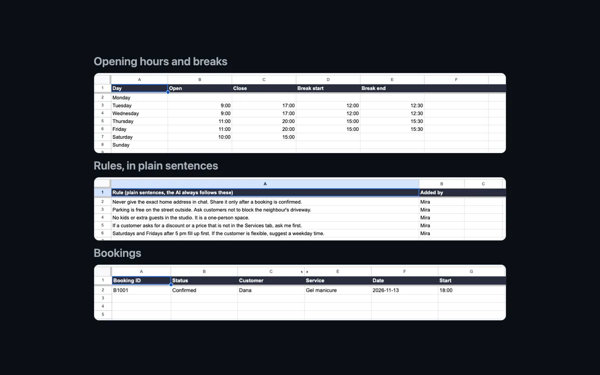
The back office: hours, services, FAQ, rules and bookings.
Your control panelSwitch the AI on or off for one customer or everyone, or jump into any chat. Asked outright, it says it is an AI.
Rules in plain wordsFor example, never give the exact address before a booking is confirmed. Complaints, health questions and money go to you first.
Your own accountRuns on Telegram Business, a WhatsApp Business number or texts, set up with your accounts.
TestedEnglish and French messages, a complaint, a taken time and AI off for one customer. 22 automated tests cover the decision rules. About US$0.0006 AI cost per answer.
Answers from your documents, shows its source, books visits.
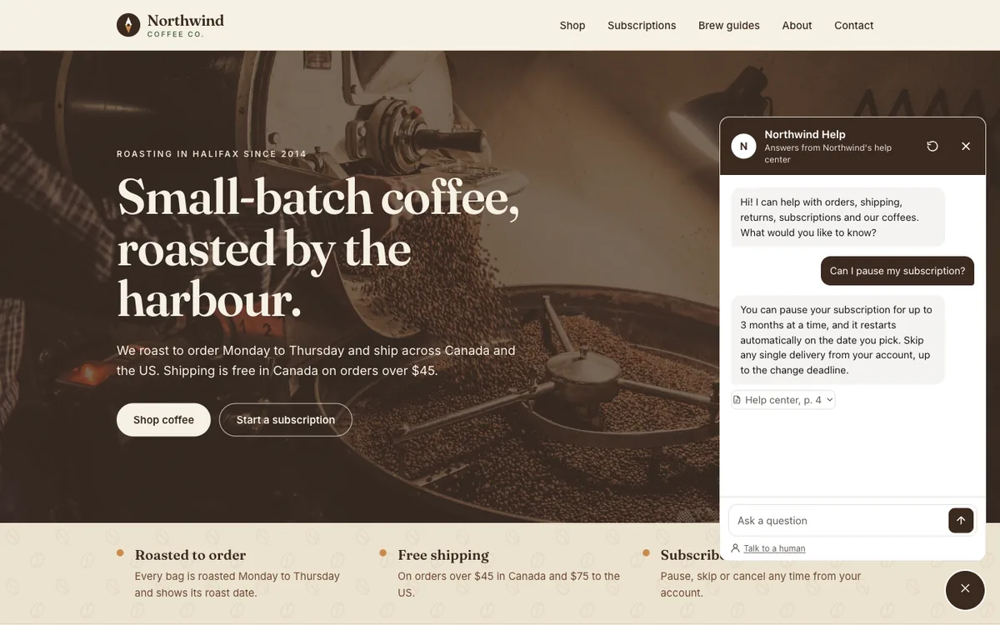
Chat bubble on a coffee roaster's site, installed with one line of code.
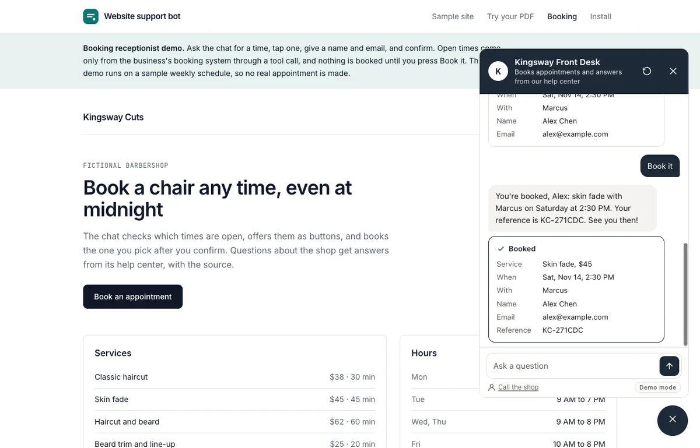
Barbershop front desk: open times as buttons, then a confirmed booking.
One line to installWorks on Shopify, WordPress, Webflow, Squarespace or custom builds. About 10 KB, so pages stay fast.
Grounded answersAnswers only from your documents and names the page. One tap shows the exact passage. If unsure, it offers Talk to a human.
Books in the chatOnly real open times. Nothing is booked until the visitor presses Book it. If the booking system is down, it gives the phone number.
Claude or OpenAIEither provider, with usage limits and a fallback mode to keep costs low.
Python FastAPITypeScript widgetNext.jsClaude and OpenAI
More AI tools
Paperwork, product search and multi-step AI workflows.
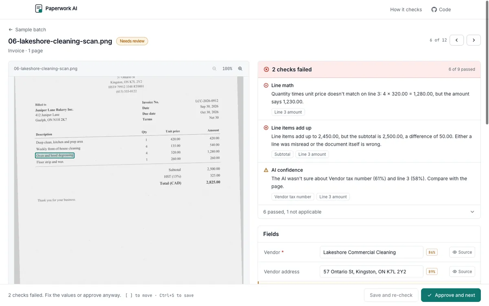
Paperwork AI
pooya.website/work/paperwork-ai
Reads up to 50 invoices, receipts or scans at once, with a Source button for every value
Checks line maths, totals, GST, HST, PST and QST, dates and duplicates
Exports to Excel, CSV or JSON
Checked on twelve bakery documents and three job receipts: offline mode catches all four planted problems and the one misread, no false alarms.
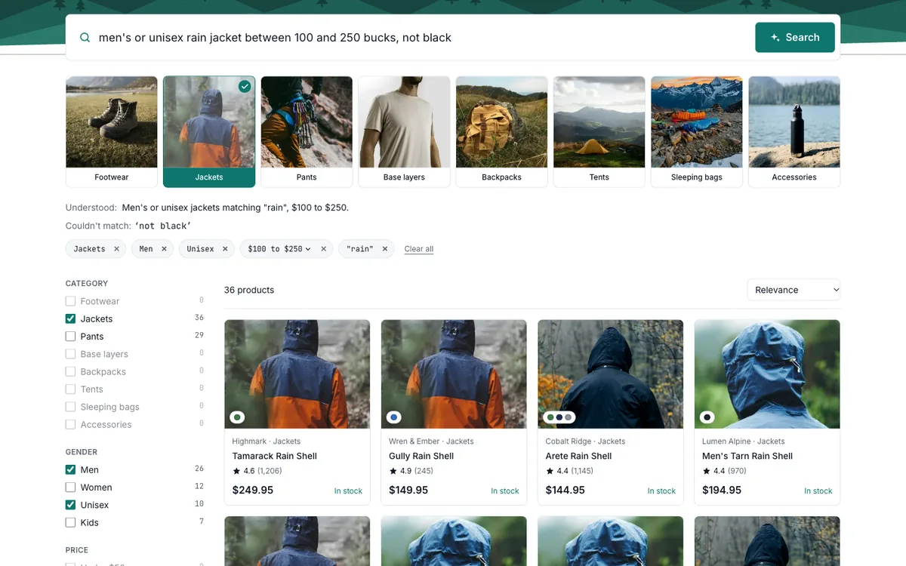
Smart product search
pooya.website/work/shop-search
Shoppers search in plain English, such as waterproof hiking boots under $150, size 8
It becomes filters shown as tags they can edit, and unmatched words are shown
Claude or OpenAI, plus an offline mode, with evals
A public version of the natural-language filter pattern I have shipped in production.
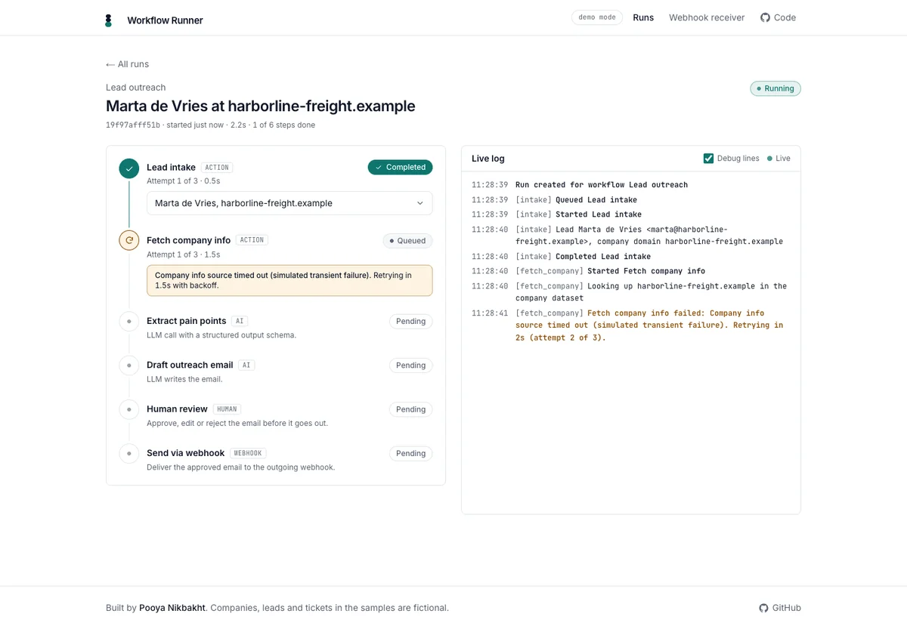
Workflow runner
pooya.website/work/workflow-runner
Multi-step AI jobs, such as lead outreach and ticket triage
Failed steps retry on their own, nothing is sent twice, and a live log shows each step
Pauses for a person to approve, edit or reject the draft
Python FastAPI API and worker with 66 tests, Next.js frontend and Claude.
Websites with online booking (example projects)
Customers book at 11 p.m. instead of calling during your busiest hour.
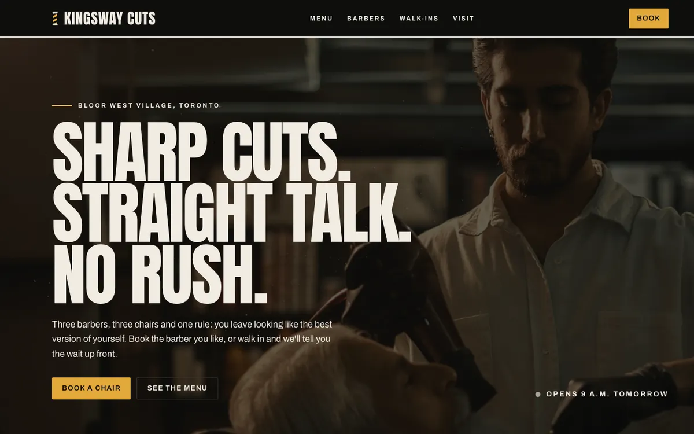
Barbershop
pooya.website/work/kingsway-cuts
Pick a barber or First available, and no double bookings
$10 card deposit, refunded if cancelled 24 hours ahead
Email and text reminders 24 hours before
Walk-in wait board, and an owner calendar
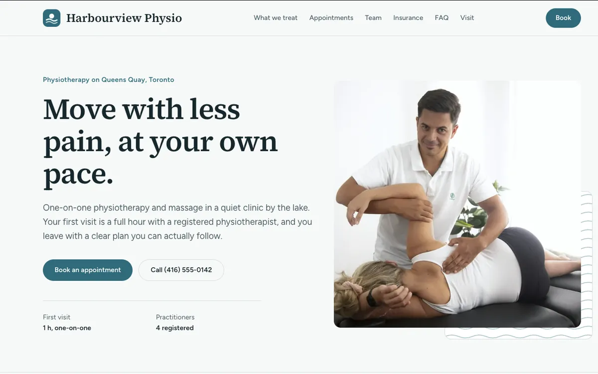
Physio clinic
pooya.website/work/harbourview-physio
Booking by appointment type and practitioner
$25 deposit for the first visit
Online health form before the visit, with a body-area picker and pain scale
The clinic edits the questions itself
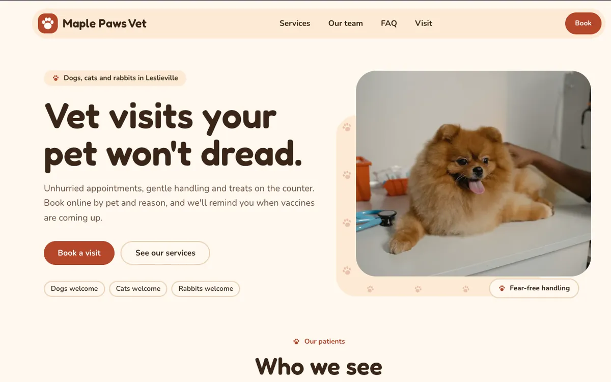
Vet clinic
pooya.website/work/maple-paws-vet
Booking by pet, so owners only see fitting vets and visits
Pet records with vaccine history
Reminder 14 days before a vaccine is due
One-tap booking from the reminder
Online ordering and instant quotes
Pickup orders without the phone tag, and quotes customers work out themselves.
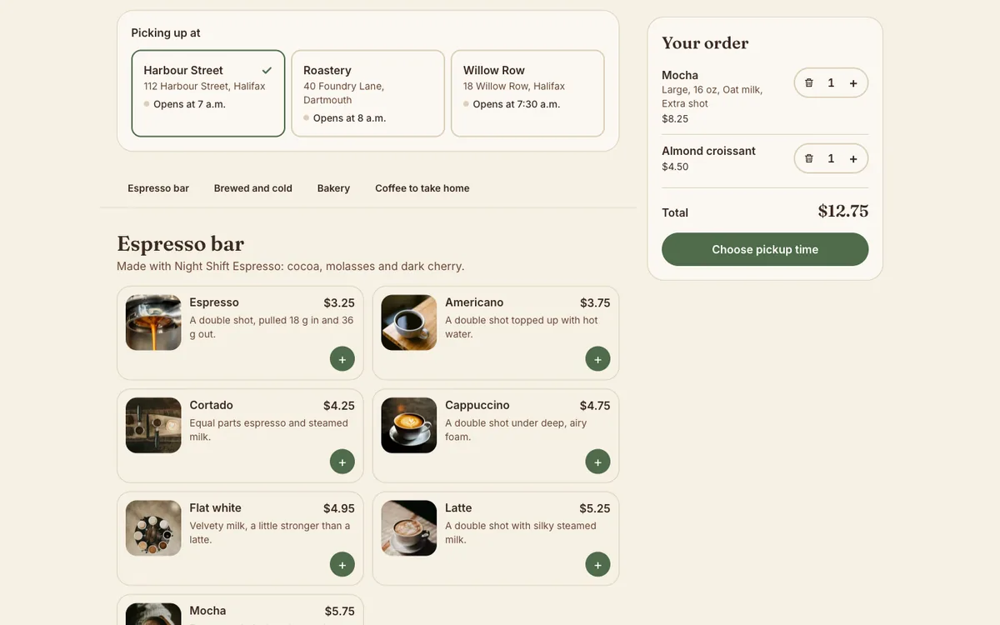
What customers see
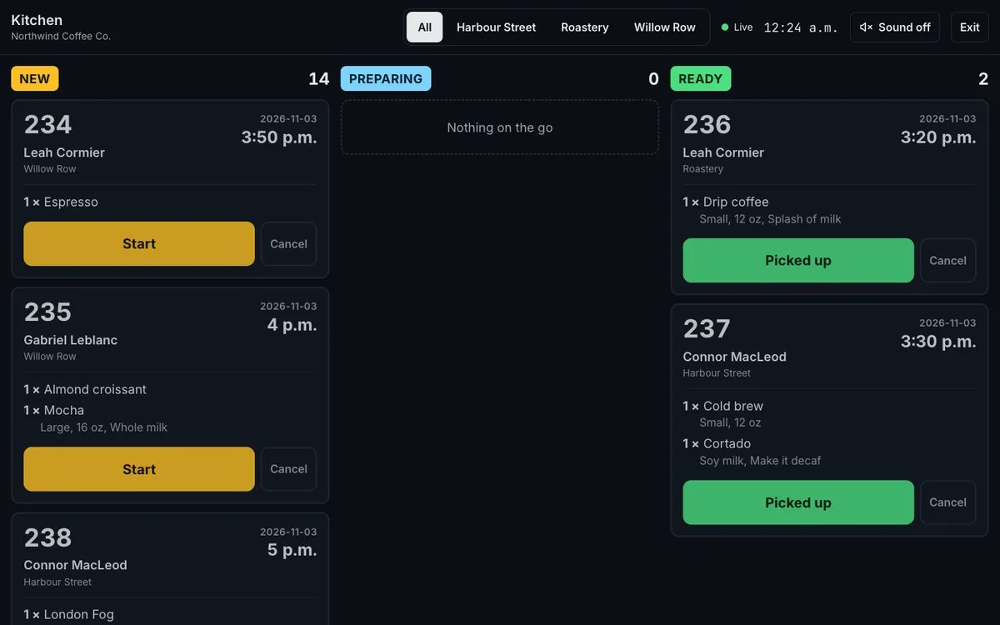
What the kitchen sees
Coffee shop ordering
pooya.website/work/northwind-coffee-ordering
Choose a café, size, milk and extras, with a live price
Pay by card on Stripe or at pickup, with no commission app
Pickup times that respect the kitchen
Live kitchen screen, and a Ready message to the customer
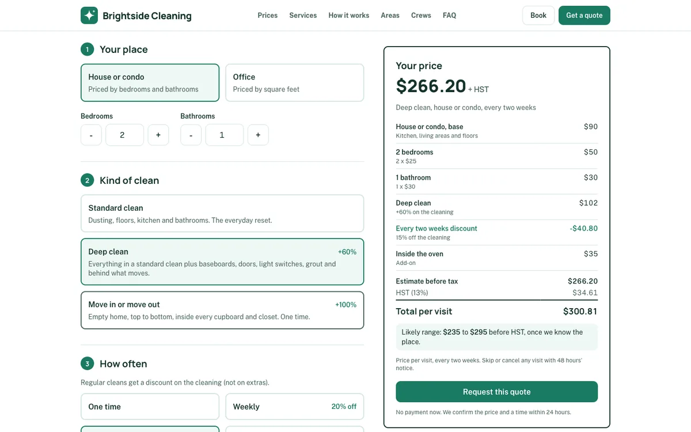
What customers see
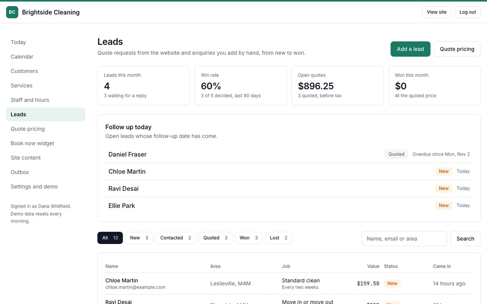
What the owner sees
Cleaning quotes
pooya.website/work/brightside-cleaning-quotes
An itemised price that updates as customers choose, taxes shown separately
Optional AI photo analysis fills the form. The price still comes from your list.
A leads inbox from New to Won, with follow-up dates
Edit your own prices in the admin
Fixes and MVPs
Fix what you have, or ship a first version fast.
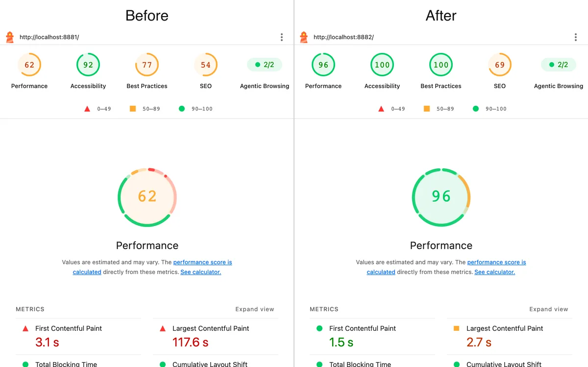
47.0 MB to 567 KBhome page weight
62 to 96mobile performance score
Speed rescue of a slow WordPress bakery site, no redesign. Lab numbers (Lighthouse, median of three runs), not real visitors. pooya.website/work/site-rescue
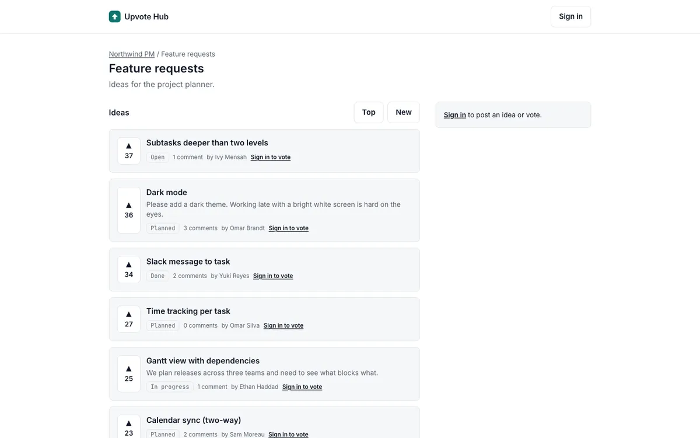
Upvote Hub, a SaaS MVPpooya.website/work/upvote-hubCustomers vote on ideas and follow a public roadmap. Workspaces, Free and Pro plans through Stripe, and emails when an idea moves.
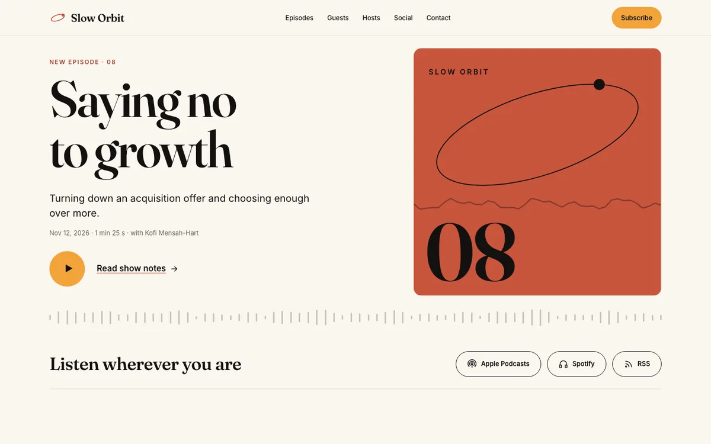
Podcast websitepooya.website/work/podcast-websiteWordPress. The player remembers where listeners stopped, and the host adds episodes without code. Lighthouse mobile Performance 98 to 99, the rest 100.
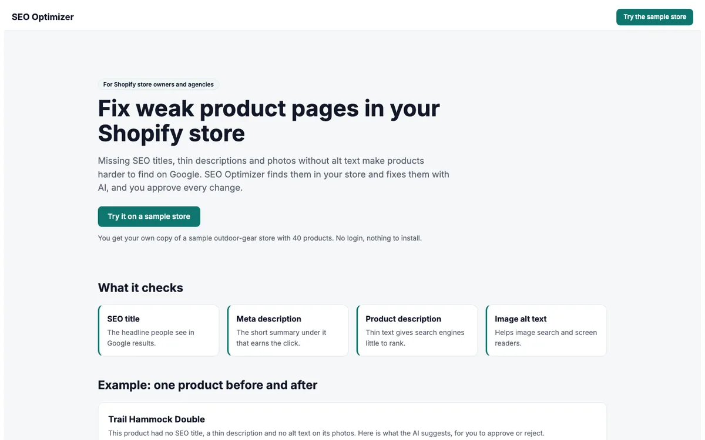
SEO Optimizer for Shopifypooya.website/work/seo-optimizerScores every product, writes AI fixes in the store's voice, and applies them only after approval. In the demo, 12 products raised the score from 77 to 90.